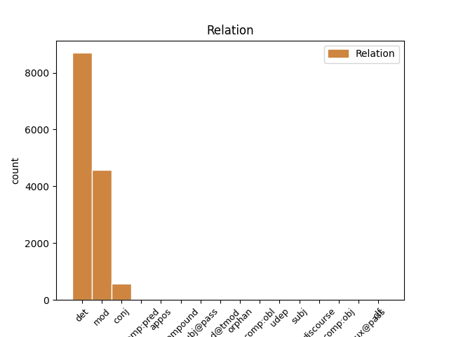
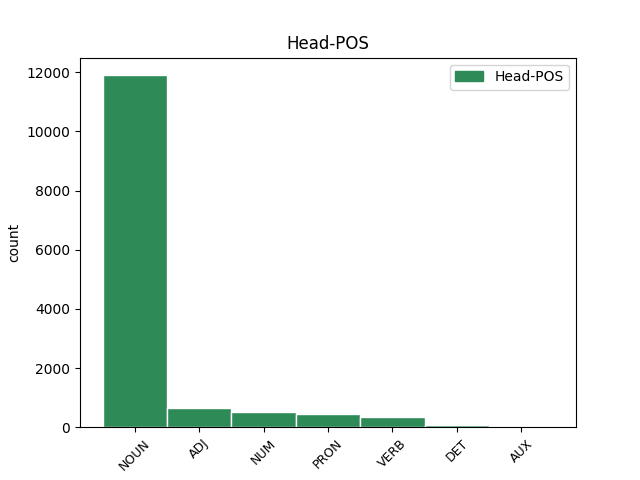
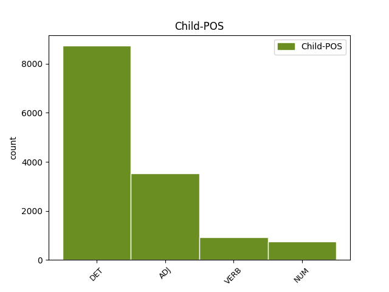

Distribution of features within this leaf



Agreement Rules sorted by frequency.
When the head token is NOUN and the dependent token is DET.
1 Care _ _ _ _ 0 _ _ _
2 s _ _ _ _ 0 _ _ _
3 -au _ _ _ _ 0 _ _ _
4 întărit _ _ _ _ 0 _ _ _
5 și _ _ _ _ 0 _ _ _
6 de _ _ _ _ 0 _ _ _
7 Domnia _ _ _ _ 0 _ _ _
8 mea _ _ _ _ 0 _ _ _
9 legiuindu _ _ _ _ 0 _ _ _
10 -să _ _ _ _ 0 _ _ _
11 și _ _ _ _ 0 _ _ _
12 aceaste _ _ _ _ 0 _ _ _
13 Ponturi _ _ _ _ 0 _ _ _
14 , _ _ _ _ 0 _ _ _
15 adăogat _ _ _ _ 0 _ _ _
16 în _ _ _ _ 0 _ _ _
17 pravela _ _ _ _ 0 _ _ _
18 pămîntului _ _ _ _ 0 _ _ _
19 , _ _ _ _ 0 _ _ _
20 supt _ _ _ _ 0 _ _ _
21 peceatea _ _ _ _ 0 _ _ _
22 Domnii _ _ _ _ 0 _ _ _
23 meale _ _ _ _ 0 _ _ _
24 precum _ _ _ _ 0 _ _ _
25 să _ _ _ _ 0 _ _ _
26 arată _ _ _ _ 0 _ _ _
27 mai _ _ _ _ 0 _ _ _
28 sus _ _ _ _ 0 _ _ _
29 , _ _ _ _ 0 _ _ _
30 care _ _ _ _ 0 _ _ _
31 s _ _ _ _ 0 _ _ _
32 -au _ _ _ _ 0 _ _ _
33 și _ _ _ _ 0 _ _ _
34 publicarisit _ _ _ _ 0 _ _ _
35 prin _ _ _ _ 0 _ _ _
36 toate _ _ _ _ 0 _ _ _
37 Judecătoriile _ _ _ _ 0 _ _ _
38 din _ _ _ _ 0 _ _ _
39 Domneasca _ _ _ _ 0 _ _ _
40 noastră _ _ _ _ 0 _ _ _
41 Ţară _ _ _ _ 0 _ _ _
42 , _ _ _ _ 0 _ _ _
43 și _ _ _ _ 0 _ _ _
44 cătră _ _ _ _ 0 _ _ _
45 toți tot DET Di3mpr Case=Acc,Nom|Gender=Masc|Number=Plur|Person=3|PronType=Ind 46 det _ ref=COMPLETARE.10
46 lăcuitorii locuitor NOUN Ncmpry Case=Acc,Nom|Definite=Def|Gender=Masc|Number=Plur 0 _ _ _
47 de _ _ _ _ 0 _ _ _
48 obște _ _ _ _ 0 _ _ _
49 ca _ _ _ _ 0 _ _ _
50 să _ _ _ _ 0 _ _ _
51 fie _ _ _ _ 0 _ _ _
52 știute _ _ _ _ 0 _ _ _
53 și _ _ _ _ 0 _ _ _
54 să _ _ _ _ 0 _ _ _
55 se _ _ _ _ 0 _ _ _
56 urmeaze _ _ _ _ 0 _ _ _
57 făr _ _ _ _ 0 _ _ _
58 de _ _ _ _ 0 _ _ _
59 strămutare _ _ _ _ 0 _ _ _
60 . _ _ _ _ 0 _ _ _
When the head token is NOUN and the dependent token is ADJ.
1 Care _ _ _ _ 0 _ _ _
2 s _ _ _ _ 0 _ _ _
3 -au _ _ _ _ 0 _ _ _
4 întărit _ _ _ _ 0 _ _ _
5 și _ _ _ _ 0 _ _ _
6 de _ _ _ _ 0 _ _ _
7 Domnia _ _ _ _ 0 _ _ _
8 mea _ _ _ _ 0 _ _ _
9 legiuindu _ _ _ _ 0 _ _ _
10 -să _ _ _ _ 0 _ _ _
11 și _ _ _ _ 0 _ _ _
12 aceaste _ _ _ _ 0 _ _ _
13 Ponturi _ _ _ _ 0 _ _ _
14 , _ _ _ _ 0 _ _ _
15 adăogat _ _ _ _ 0 _ _ _
16 în _ _ _ _ 0 _ _ _
17 pravela _ _ _ _ 0 _ _ _
18 pămîntului _ _ _ _ 0 _ _ _
19 , _ _ _ _ 0 _ _ _
20 supt _ _ _ _ 0 _ _ _
21 peceatea _ _ _ _ 0 _ _ _
22 Domnii _ _ _ _ 0 _ _ _
23 meale _ _ _ _ 0 _ _ _
24 precum _ _ _ _ 0 _ _ _
25 să _ _ _ _ 0 _ _ _
26 arată _ _ _ _ 0 _ _ _
27 mai _ _ _ _ 0 _ _ _
28 sus _ _ _ _ 0 _ _ _
29 , _ _ _ _ 0 _ _ _
30 care _ _ _ _ 0 _ _ _
31 s _ _ _ _ 0 _ _ _
32 -au _ _ _ _ 0 _ _ _
33 și _ _ _ _ 0 _ _ _
34 publicarisit _ _ _ _ 0 _ _ _
35 prin _ _ _ _ 0 _ _ _
36 toate _ _ _ _ 0 _ _ _
37 Judecătoriile _ _ _ _ 0 _ _ _
38 din _ _ _ _ 0 _ _ _
39 Domneasca domnesc ADJ Afpfsry Case=Acc,Nom|Definite=Def|Degree=Pos|Gender=Fem|Number=Sing 41 mod _ ref=COMPLETARE.10
40 noastră _ _ _ _ 0 _ _ _
41 Ţară țară NOUN Ncfsrn Case=Acc,Nom|Definite=Ind|Gender=Fem|Number=Sing 0 _ _ _
42 , _ _ _ _ 0 _ _ _
43 și _ _ _ _ 0 _ _ _
44 cătră _ _ _ _ 0 _ _ _
45 toți _ _ _ _ 0 _ _ _
46 lăcuitorii _ _ _ _ 0 _ _ _
47 de _ _ _ _ 0 _ _ _
48 obște _ _ _ _ 0 _ _ _
49 ca _ _ _ _ 0 _ _ _
50 să _ _ _ _ 0 _ _ _
51 fie _ _ _ _ 0 _ _ _
52 știute _ _ _ _ 0 _ _ _
53 și _ _ _ _ 0 _ _ _
54 să _ _ _ _ 0 _ _ _
55 se _ _ _ _ 0 _ _ _
56 urmeaze _ _ _ _ 0 _ _ _
57 făr _ _ _ _ 0 _ _ _
58 de _ _ _ _ 0 _ _ _
59 strămutare _ _ _ _ 0 _ _ _
60 . _ _ _ _ 0 _ _ _
When the head token is NOUN and the dependent token is VERB.
1 NOI _ _ _ _ 0 _ _ _
2 GRIGORIE _ _ _ _ 0 _ _ _
3 GHICA _ _ _ _ 0 _ _ _
4 VV. _ _ _ _ 0 _ _ _
5 , _ _ _ _ 0 _ _ _
6 DOMN _ _ _ _ 0 _ _ _
7 ŢĂRII _ _ _ _ 0 _ _ _
8 ROMÎNEŞTI _ _ _ _ 0 _ _ _
9 După _ _ _ _ 0 _ _ _
10 necontenitele _ _ _ _ 0 _ _ _
11 prigoniri _ _ _ _ 0 _ _ _
12 ce _ _ _ _ 0 _ _ _
13 să _ _ _ _ 0 _ _ _
14 urma _ _ _ _ 0 _ _ _
15 pînă _ _ _ _ 0 _ _ _
16 acum _ _ _ _ 0 _ _ _
17 între _ _ _ _ 0 _ _ _
18 stăpînii _ _ _ _ 0 _ _ _
19 moșiilor _ _ _ _ 0 _ _ _
20 cu _ _ _ _ 0 _ _ _
21 clăcașii _ _ _ _ 0 _ _ _
22 lor _ _ _ _ 0 _ _ _
23 asupra _ _ _ _ 0 _ _ _
24 ponturilor pont NOUN Ncfpoy Case=Dat,Gen|Definite=Def|Gender=Fem|Number=Plur 0 _ _ _
25 de _ _ _ _ 0 _ _ _
26 mai _ _ _ _ 0 _ _ _
27 sus _ _ _ _ 0 _ _ _
28 arătate arăta VERB Vmp--pf-p Gender=Fem|Number=Plur|Polarity=Pos|VerbForm=Part 24 mod _ ref=COMPLETARE.8|SpaceAfter=No
29 : _ _ _ _ 0 _ _ _
30 nefiind _ _ _ _ 0 _ _ _
31 deslușite _ _ _ _ 0 _ _ _
32 întru _ _ _ _ 0 _ _ _
33 această _ _ _ _ 0 _ _ _
34 Pravilă _ _ _ _ 0 _ _ _
35 a _ _ _ _ 0 _ _ _
36 pămîntului _ _ _ _ 0 _ _ _
37 . _ _ _ _ 0 _ _ _
When the head token is NOUN and the dependent token is NUM.
1 Iară _ _ _ _ 0 _ _ _
2 cînd _ _ _ _ 0 _ _ _
3 stăpînul _ _ _ _ 0 _ _ _
4 nu _ _ _ _ 0 _ _ _
5 va _ _ _ _ 0 _ _ _
6 avea _ _ _ _ 0 _ _ _
7 trebuință _ _ _ _ 0 _ _ _
8 de _ _ _ _ 0 _ _ _
9 arătură _ _ _ _ 0 _ _ _
10 , _ _ _ _ 0 _ _ _
11 și _ _ _ _ 0 _ _ _
12 va _ _ _ _ 0 _ _ _
13 ceare _ _ _ _ 0 _ _ _
14 bani _ _ _ _ 0 _ _ _
15 , _ _ _ _ 0 _ _ _
16 să _ _ _ _ 0 _ _ _
17 ia _ _ _ _ 0 _ _ _
18 de _ _ _ _ 0 _ _ _
19 plug _ _ _ _ 0 _ _ _
20 talere taler NOUN Ncfprn Case=Acc,Nom|Definite=Ind|Gender=Fem|Number=Plur 0 _ _ _
21 patru patru NUM Mcfp-l Gender=Fem|Number=Plur|NumForm=Word|NumType=Card 20 mod _ ref=COMPLETARE.4|SpaceAfter=No
22 , _ _ _ _ 0 _ _ _
23 pentru _ _ _ _ 0 _ _ _
24 ziua _ _ _ _ 0 _ _ _
25 de _ _ _ _ 0 _ _ _
26 arătură _ _ _ _ 0 _ _ _
27 , _ _ _ _ 0 _ _ _
28 plătindu _ _ _ _ 0 _ _ _
29 -i _ _ _ _ 0 _ _ _
30 acești _ _ _ _ 0 _ _ _
31 bani _ _ _ _ 0 _ _ _
32 toți _ _ _ _ 0 _ _ _
33 oamenii _ _ _ _ 0 _ _ _
34 cîți _ _ _ _ 0 _ _ _
35 sînt _ _ _ _ 0 _ _ _
36 întovărășiți _ _ _ _ 0 _ _ _
37 la _ _ _ _ 0 _ _ _
38 acest _ _ _ _ 0 _ _ _
39 plug _ _ _ _ 0 _ _ _
40 . _ _ _ _ 0 _ _ _
When the head token is NUM and the dependent token is DET.
1 Hotărîrea _ _ _ _ 0 _ _ _
2 unui _ _ _ _ 0 _ _ _
3 Domn _ _ _ _ 0 _ _ _
4 , _ _ _ _ 0 _ _ _
5 stricată _ _ _ _ 0 _ _ _
6 de _ _ _ _ 0 _ _ _
7 alt _ _ _ _ 0 _ _ _
8 Domn _ _ _ _ 0 _ _ _
9 , _ _ _ _ 0 _ _ _
10 are _ _ _ _ 0 _ _ _
11 Apellație _ _ _ _ 0 _ _ _
12 la _ _ _ _ 0 _ _ _
13 al al DET Tsmsr Case=Acc,Nom|Gender=Masc|Number=Sing|Poss=Yes|PronType=Art 14 det _ ref=PART_V_CAP_4.8
14 treilea trei NUM Moms-l Gender=Masc|Number=Sing|NumForm=Word|NumType=Ord 0 _ _ _
15 Domn _ _ _ _ 0 _ _ _
16 . _ _ _ _ 0 _ _ _
When the head token is ADJ and the dependent token is DET.
1 Prea _ _ _ _ 0 _ _ _
2 Înălțate _ _ _ _ 0 _ _ _
3 Doamne _ _ _ _ 0 _ _ _
4 ! _ _ _ _ 0 _ _ _
5 După _ _ _ _ 0 _ _ _
6 luminată _ _ _ _ 0 _ _ _
7 porunca _ _ _ _ 0 _ _ _
8 Mării _ _ _ _ 0 _ _ _
9 tale _ _ _ _ 0 _ _ _
10 adunîndu _ _ _ _ 0 _ _ _
11 -ne _ _ _ _ 0 _ _ _
12 în _ _ _ _ 0 _ _ _
13 multe _ _ _ _ 0 _ _ _
14 rînduri _ _ _ _ 0 _ _ _
15 cu _ _ _ _ 0 _ _ _
16 toții _ _ _ _ 0 _ _ _
17 la _ _ _ _ 0 _ _ _
18 un _ _ _ _ 0 _ _ _
19 loc _ _ _ _ 0 _ _ _
20 , _ _ _ _ 0 _ _ _
21 am _ _ _ _ 0 _ _ _
22 cetit _ _ _ _ 0 _ _ _
23 cu _ _ _ _ 0 _ _ _
24 luare _ _ _ _ 0 _ _ _
25 aminte _ _ _ _ 0 _ _ _
26 Pravila _ _ _ _ 0 _ _ _
27 ce _ _ _ _ 0 _ _ _
28 s _ _ _ _ 0 _ _ _
29 -au _ _ _ _ 0 _ _ _
30 alcătuit _ _ _ _ 0 _ _ _
31 de _ _ _ _ 0 _ _ _
32 cătră _ _ _ _ 0 _ _ _
33 Măria _ _ _ _ 0 _ _ _
34 ta _ _ _ _ 0 _ _ _
35 , _ _ _ _ 0 _ _ _
36 și _ _ _ _ 0 _ _ _
37 ne _ _ _ _ 0 _ _ _
38 pliroforisirăm _ _ _ _ 0 _ _ _
39 , _ _ _ _ 0 _ _ _
40 că _ _ _ _ 0 _ _ _
41 alcătuirea _ _ _ _ 0 _ _ _
42 aceștii _ _ _ _ 0 _ _ _
43 Pravili _ _ _ _ 0 _ _ _
44 este _ _ _ _ 0 _ _ _
45 o _ _ _ _ 0 _ _ _
46 deslușire _ _ _ _ 0 _ _ _
47 a _ _ _ _ 0 _ _ _
48 Pravililor _ _ _ _ 0 _ _ _
49 Împărătești _ _ _ _ 0 _ _ _
50 , _ _ _ _ 0 _ _ _
51 ce _ _ _ _ 0 _ _ _
52 să _ _ _ _ 0 _ _ _
53 obicinuesc _ _ _ _ 0 _ _ _
54 aici _ _ _ _ 0 _ _ _
55 în _ _ _ _ 0 _ _ _
56 pămîntul _ _ _ _ 0 _ _ _
57 nostru _ _ _ _ 0 _ _ _
58 , _ _ _ _ 0 _ _ _
59 și _ _ _ _ 0 _ _ _
60 a _ _ _ _ 0 _ _ _
61 vechilor _ _ _ _ 0 _ _ _
62 , _ _ _ _ 0 _ _ _
63 și _ _ _ _ 0 _ _ _
64 a al DET Tsfsr Case=Acc,Nom|Gender=Fem|Number=Sing|Poss=Yes|PronType=Art 65 det _ ref=ANAFORA.1
65 canonisitelor canonisit ADJ Afpfpoy Case=Dat,Gen|Definite=Def|Degree=Pos|Gender=Fem|Number=Plur 0 _ _ _
66 obiceaiuri _ _ _ _ 0 _ _ _
67 ale _ _ _ _ 0 _ _ _
68 pămîntului _ _ _ _ 0 _ _ _
69 , _ _ _ _ 0 _ _ _
70 nefiind _ _ _ _ 0 _ _ _
71 împotrivitoare _ _ _ _ 0 _ _ _
72 celor _ _ _ _ 0 _ _ _
73 vechi _ _ _ _ 0 _ _ _
74 urmate _ _ _ _ 0 _ _ _
75 pînă _ _ _ _ 0 _ _ _
76 acum _ _ _ _ 0 _ _ _
77 . _ _ _ _ 0 _ _ _
When the head token is ADJ and the dependent token is ADJ.
1 Prin _ _ _ _ 0 _ _ _
2 obștească _ _ _ _ 0 _ _ _
3 chibzuire _ _ _ _ 0 _ _ _
4 ce _ _ _ _ 0 _ _ _
5 s _ _ _ _ 0 _ _ _
6 -au _ _ _ _ 0 _ _ _
7 făcut _ _ _ _ 0 _ _ _
8 în _ _ _ _ 0 _ _ _
9 scris _ _ _ _ 0 _ _ _
10 prin _ _ _ _ 0 _ _ _
11 Anafora _ _ _ _ 0 _ _ _
12 de _ _ _ _ 0 _ _ _
13 sfinția _ _ _ _ 0 _ _ _
14 lor _ _ _ _ 0 _ _ _
15 Părinți _ _ _ _ 0 _ _ _
16 Arhierei _ _ _ _ 0 _ _ _
17 și _ _ _ _ 0 _ _ _
18 de _ _ _ _ 0 _ _ _
19 Dumnealor _ _ _ _ 0 _ _ _
20 cinstiții cinstit ADJ Afpmpry Case=Acc,Nom|Definite=Def|Degree=Pos|Gender=Masc|Number=Plur 0 _ _ _
21 și _ _ _ _ 0 _ _ _
22 credincioșii credincios ADJ Afpmpry Case=Acc,Nom|Definite=Def|Degree=Pos|Gender=Masc|Number=Plur 20 conj _ ref=COMPLETARE.9
23 Boerii _ _ _ _ 0 _ _ _
24 Veliți _ _ _ _ 0 _ _ _
25 ai _ _ _ _ 0 _ _ _
26 divanului _ _ _ _ 0 _ _ _
27 Domnii _ _ _ _ 0 _ _ _
28 meale _ _ _ _ 0 _ _ _
29 , _ _ _ _ 0 _ _ _
30 Halea _ _ _ _ 0 _ _ _
31 și _ _ _ _ 0 _ _ _
32 mazilii _ _ _ _ 0 _ _ _
33 . _ _ _ _ 0 _ _ _
When the head token is PRON and the dependent token is DET.
1 Din _ _ _ _ 0 _ _ _
2 Luminată _ _ _ _ 0 _ _ _
3 poruncă _ _ _ _ 0 _ _ _
4 a _ _ _ _ 0 _ _ _
5 Mării mărie PRON Pp3fsoy Case=Dat,Gen|Gender=Fem|Number=Sing|Person=3|Polite=Form|PronType=Prs 0 _ _ _
6 sale său DET Ds3fsos Case=Dat,Gen|Gender=Fem|Number=Sing|Number[psor]=Sing|Person=3|PronType=Prs 5 det _ ref=ANAFORA.3
7 Prea _ _ _ _ 0 _ _ _
8 Înălțatului _ _ _ _ 0 _ _ _
9 nostru _ _ _ _ 0 _ _ _
10 Domn _ _ _ _ 0 _ _ _
11 Io _ _ _ _ 0 _ _ _
12 Ioann _ _ _ _ 0 _ _ _
13 Gheorghie _ _ _ _ 0 _ _ _
14 Caragea _ _ _ _ 0 _ _ _
15 , _ _ _ _ 0 _ _ _
16 Vv _ _ _ _ 0 _ _ _
17 . _ _ _ _ 0 _ _ _
When the head token is VERB and the dependent token is VERB.
1 Care _ _ _ _ 0 _ _ _
2 după _ _ _ _ 0 _ _ _
3 învoială _ _ _ _ 0 _ _ _
4 în _ _ _ _ 0 _ _ _
5 scris _ _ _ _ 0 _ _ _
6 , _ _ _ _ 0 _ _ _
7 sau _ _ _ _ 0 _ _ _
8 izbrănire _ _ _ _ 0 _ _ _
9 , _ _ _ _ 0 _ _ _
10 să _ _ _ _ 0 _ _ _
11 va _ _ _ _ 0 _ _ _
12 judeca _ _ _ _ 0 _ _ _
13 pentru _ _ _ _ 0 _ _ _
14 aceiași _ _ _ _ 0 _ _ _
15 pricină _ _ _ _ 0 _ _ _
16 pentru _ _ _ _ 0 _ _ _
17 care _ _ _ _ 0 _ _ _
18 s _ _ _ _ 0 _ _ _
19 -au _ _ _ _ 0 _ _ _
20 învoit _ _ _ _ 0 _ _ _
21 , _ _ _ _ 0 _ _ _
22 ori _ _ _ _ 0 _ _ _
23 s _ _ _ _ 0 _ _ _
24 -au _ _ _ _ 0 _ _ _
25 răfuit _ _ _ _ 0 _ _ _
26 , _ _ _ _ 0 _ _ _
27 și _ _ _ _ 0 _ _ _
28 va _ _ _ _ 0 _ _ _
29 pierde _ _ _ _ 0 _ _ _
30 judecata _ _ _ _ 0 _ _ _
31 , _ _ _ _ 0 _ _ _
32 acela _ _ _ _ 0 _ _ _
33 să _ _ _ _ 0 _ _ _
34 plătească _ _ _ _ 0 _ _ _
35 ceilalte _ _ _ _ 0 _ _ _
36 părți _ _ _ _ 0 _ _ _
37 cheltuiala _ _ _ _ 0 _ _ _
38 judecății _ _ _ _ 0 _ _ _
39 , _ _ _ _ 0 _ _ _
40 și _ _ _ _ 0 _ _ _
41 cine _ _ _ _ 0 _ _ _
42 să _ _ _ _ 0 _ _ _
43 va _ _ _ _ 0 _ _ _
44 judeca _ _ _ _ 0 _ _ _
45 după _ _ _ _ 0 _ _ _
46 învoială _ _ _ _ 0 _ _ _
47 , _ _ _ _ 0 _ _ _
48 sau _ _ _ _ 0 _ _ _
49 răfuire _ _ _ _ 0 _ _ _
50 nescrisă scrie VERB Vmp--sf-z--r Case=Acc,Nom|Gender=Fem|Number=Sing|Polarity=Neg|VerbForm=Part 0 _ _ _
51 dar _ _ _ _ 0 _ _ _
52 dovedită dovedi VERB Vmp--sf-p--r Case=Acc,Nom|Gender=Fem|Number=Sing|Polarity=Pos|VerbForm=Part 50 conj _ ref=PART_V_CAP_3.12|SpaceAfter=No
53 , _ _ _ _ 0 _ _ _
54 și _ _ _ _ 0 _ _ _
55 -și _ _ _ _ 0 _ _ _
56 va _ _ _ _ 0 _ _ _
57 pierde _ _ _ _ 0 _ _ _
58 judecata _ _ _ _ 0 _ _ _
59 , _ _ _ _ 0 _ _ _
60 și _ _ _ _ 0 _ _ _
61 acela _ _ _ _ 0 _ _ _
62 să _ _ _ _ 0 _ _ _
63 plătească _ _ _ _ 0 _ _ _
64 cheltuiala _ _ _ _ 0 _ _ _
65 judecății _ _ _ _ 0 _ _ _
66 . _ _ _ _ 0 _ _ _
When the head token is VERB and the dependent token is DET.
1 Iară _ _ _ _ 0 _ _ _
2 cine _ _ _ _ 0 _ _ _
3 va _ _ _ _ 0 _ _ _
4 stăpîni _ _ _ _ 0 _ _ _
5 cu _ _ _ _ 0 _ _ _
6 bună _ _ _ _ 0 _ _ _
7 credință _ _ _ _ 0 _ _ _
8 lucru _ _ _ _ 0 _ _ _
9 strein _ _ _ _ 0 _ _ _
10 , _ _ _ _ 0 _ _ _
11 acela _ _ _ _ 0 _ _ _
12 cînd _ _ _ _ 0 _ _ _
13 să _ _ _ _ 0 _ _ _
14 va _ _ _ _ 0 _ _ _
15 lua _ _ _ _ 0 _ _ _
16 prin _ _ _ _ 0 _ _ _
17 judecată _ _ _ _ 0 _ _ _
18 lucrul _ _ _ _ 0 _ _ _
19 , _ _ _ _ 0 _ _ _
20 să _ _ _ _ 0 _ _ _
21 nu _ _ _ _ 0 _ _ _
22 întoarcă _ _ _ _ 0 _ _ _
23 roadele _ _ _ _ 0 _ _ _
24 , _ _ _ _ 0 _ _ _
25 afară _ _ _ _ 0 _ _ _
26 numai _ _ _ _ 0 _ _ _
27 pentru _ _ _ _ 0 _ _ _
28 lucrul _ _ _ _ 0 _ _ _
29 cel cel DET Tdmsr Case=Acc,Nom|Gender=Masc|Number=Sing|PronType=Dem 30 det _ ref=PART_V_CAP_3.9b
30 cumpărat cumparat VERB Vmp--sm-p Gender=Masc|Number=Sing|Polarity=Pos|VerbForm=Part 0 _ _ _
31 ( _ _ _ _ 0 _ _ _
32 vezi _ _ _ _ 0 _ _ _
33 pentru _ _ _ _ 0 _ _ _
34 vînzare _ _ _ _ 0 _ _ _
35 la _ _ _ _ 0 _ _ _
36 32 _ _ _ _ 0 _ _ _
37 ) _ _ _ _ 0 _ _ _
38 . _ _ _ _ 0 _ _ _
When the head token is ADJ and the dependent token is VERB.
1 Cînd _ _ _ _ 0 _ _ _
2 bărbatul _ _ _ _ 0 _ _ _
3 să _ _ _ _ 0 _ _ _
4 va _ _ _ _ 0 _ _ _
5 dovedi _ _ _ _ 0 _ _ _
6 răsipitoriu _ _ _ _ 0 _ _ _
7 , _ _ _ _ 0 _ _ _
8 și _ _ _ _ 0 _ _ _
9 cheltuitoriu cheltuitor ADJ Afpmsrn Case=Acc,Nom|Definite=Ind|Degree=Pos|Gender=Masc|Number=Sing 0 _ _ _
10 , _ _ _ _ 0 _ _ _
11 sau _ _ _ _ 0 _ _ _
12 îngreoiat îngreuia VERB Vmp--sm-p Gender=Masc|Number=Sing|Polarity=Pos|VerbForm=Part 9 conj _ ref=PART_III_CAP_16b.37
13 cu _ _ _ _ 0 _ _ _
14 datorii _ _ _ _ 0 _ _ _
15 , _ _ _ _ 0 _ _ _
16 poate _ _ _ _ 0 _ _ _
17 muerea _ _ _ _ 0 _ _ _
18 , _ _ _ _ 0 _ _ _
19 cu _ _ _ _ 0 _ _ _
20 mijlocul _ _ _ _ 0 _ _ _
21 judecății _ _ _ _ 0 _ _ _
22 să _ _ _ _ 0 _ _ _
23 -și _ _ _ _ 0 _ _ _
24 ia _ _ _ _ 0 _ _ _
25 zestrea _ _ _ _ 0 _ _ _
26 , _ _ _ _ 0 _ _ _
27 sau _ _ _ _ 0 _ _ _
28 să _ _ _ _ 0 _ _ _
29 ceară _ _ _ _ 0 _ _ _
30 siguranția _ _ _ _ 0 _ _ _
31 ei _ _ _ _ 0 _ _ _
32 . _ _ _ _ 0 _ _ _
When the head token is DET and the dependent token is DET.
1 La _ _ _ _ 0 _ _ _
2 tocmealele _ _ _ _ 0 _ _ _
3 ceale _ _ _ _ 0 _ _ _
4 cu _ _ _ _ 0 _ _ _
5 doao _ _ _ _ 0 _ _ _
6 sume _ _ _ _ 0 _ _ _
7 , _ _ _ _ 0 _ _ _
8 și _ _ _ _ 0 _ _ _
9 cu _ _ _ _ 0 _ _ _
10 doao _ _ _ _ 0 _ _ _
11 vremi _ _ _ _ 0 _ _ _
12 , _ _ _ _ 0 _ _ _
13 priimim _ _ _ _ 0 _ _ _
14 suma _ _ _ _ 0 _ _ _
15 cea cel DET Tdfsr Case=Acc,Nom|Gender=Fem|Number=Sing|PronType=Dem 17 det _ ref=PART_V_CAP_2a.13a
16 mai _ _ _ _ 0 _ _ _
17 puțină puțin DET Di3fsr Case=Acc,Nom|Gender=Fem|Number=Sing|Person=3|PronType=Ind 0 _ _ _
18 , _ _ _ _ 0 _ _ _
19 și _ _ _ _ 0 _ _ _
20 vreamea _ _ _ _ 0 _ _ _
21 cea _ _ _ _ 0 _ _ _
22 mai _ _ _ _ 0 _ _ _
23 îndelungată _ _ _ _ 0 _ _ _
24 . _ _ _ _ 0 _ _ _
When the head token is PRON and the dependent token is ADJ.
1 Nebunilor _ _ _ _ 0 _ _ _
2 , _ _ _ _ 0 _ _ _
3 nevîrsnecilor _ _ _ _ 0 _ _ _
4 , _ _ _ _ 0 _ _ _
5 robilor _ _ _ _ 0 _ _ _
6 , _ _ _ _ 0 _ _ _
7 răsipitorilor _ _ _ _ 0 _ _ _
8 , _ _ _ _ 0 _ _ _
9 tîlharilor _ _ _ _ 0 _ _ _
10 , _ _ _ _ 0 _ _ _
11 furilor _ _ _ _ 0 _ _ _
12 , _ _ _ _ 0 _ _ _
13 prepunătorilor _ _ _ _ 0 _ _ _
14 , _ _ _ _ 0 _ _ _
15 martorilor _ _ _ _ 0 _ _ _
16 mincinoși _ _ _ _ 0 _ _ _
17 , _ _ _ _ 0 _ _ _
18 tăetorilor _ _ _ _ 0 _ _ _
19 de _ _ _ _ 0 _ _ _
20 bani _ _ _ _ 0 _ _ _
21 , _ _ _ _ 0 _ _ _
22 muflujilor _ _ _ _ 0 _ _ _
23 mincinoși _ _ _ _ 0 _ _ _
24 , _ _ _ _ 0 _ _ _
25 și _ _ _ _ 0 _ _ _
26 cîți _ _ _ _ 0 _ _ _
27 sînt _ _ _ _ 0 _ _ _
28 știuți _ _ _ _ 0 _ _ _
29 că _ _ _ _ 0 _ _ _
30 au _ _ _ _ 0 _ _ _
31 puțină _ _ _ _ 0 _ _ _
32 evlavie _ _ _ _ 0 _ _ _
33 cătră _ _ _ _ 0 _ _ _
34 ceale acela PRON Pd3fpr Case=Acc,Nom|Gender=Fem|Number=Plur|Person=3|PronType=Dem 0 _ _ _
35 Domnezeești Dumnezăiesc ADJ Afpfprn Case=Acc,Nom|Definite=Ind|Degree=Pos|Gender=Fem|Number=Plur 34 mod _ ref=PART_V_CAP_2c.46|SpaceAfter=No
36 , _ _ _ _ 0 _ _ _
37 acestora _ _ _ _ 0 _ _ _
38 nici _ _ _ _ 0 _ _ _
39 li _ _ _ _ 0 _ _ _
40 să _ _ _ _ 0 _ _ _
41 provaliseaște _ _ _ _ 0 _ _ _
42 jurămînt _ _ _ _ 0 _ _ _
43 , _ _ _ _ 0 _ _ _
44 nici _ _ _ _ 0 _ _ _
45 li _ _ _ _ 0 _ _ _
46 să _ _ _ _ 0 _ _ _
47 dă _ _ _ _ 0 _ _ _
48 credință _ _ _ _ 0 _ _ _
49 daca _ _ _ _ 0 _ _ _
50 vor _ _ _ _ 0 _ _ _
51 jura _ _ _ _ 0 _ _ _
52 . _ _ _ _ 0 _ _ _
When the head token is VERB and the dependent token is ADJ.
1 O _ _ _ _ 0 _ _ _
2 carte _ _ _ _ 0 _ _ _
3 de _ _ _ _ 0 _ _ _
4 datorie _ _ _ _ 0 _ _ _
5 , _ _ _ _ 0 _ _ _
6 a _ _ _ _ 0 _ _ _
7 ocîrmuitoriului _ _ _ _ 0 _ _ _
8 tovăroșiei _ _ _ _ 0 _ _ _
9 ce _ _ _ _ 0 _ _ _
10 iaste _ _ _ _ 0 _ _ _
11 orînduit orândui VERB Vmp--sm-p Gender=Masc|Number=Sing|Polarity=Pos|VerbForm=Part 0 _ _ _
12 , _ _ _ _ 0 _ _ _
13 ocîrmuitoriu ocârmuitor ADJ Afpmsrn Case=Acc,Nom|Definite=Ind|Degree=Pos|Gender=Masc|Number=Sing 11 comp:pred _ ref=PART_V_CAP_2a.27
14 în _ _ _ _ 0 _ _ _
15 scris _ _ _ _ 0 _ _ _
16 de _ _ _ _ 0 _ _ _
17 cătră _ _ _ _ 0 _ _ _
18 tovăroșie _ _ _ _ 0 _ _ _
19 , _ _ _ _ 0 _ _ _
20 o _ _ _ _ 0 _ _ _
21 îndatorează _ _ _ _ 0 _ _ _
22 și _ _ _ _ 0 _ _ _
23 pre _ _ _ _ 0 _ _ _
24 ocîrmuitoriu _ _ _ _ 0 _ _ _
25 deosebi _ _ _ _ 0 _ _ _
26 , _ _ _ _ 0 _ _ _
27 și _ _ _ _ 0 _ _ _
28 tovăroșia _ _ _ _ 0 _ _ _
29 de _ _ _ _ 0 _ _ _
30 obște _ _ _ _ 0 _ _ _
31 . _ _ _ _ 0 _ _ _
When the head token is PRON and the dependent token is VERB.
1 Furul _ _ _ _ 0 _ _ _
2 de _ _ _ _ 0 _ _ _
3 lucruri _ _ _ _ 0 _ _ _
4 sfinte _ _ _ _ 0 _ _ _
5 din _ _ _ _ 0 _ _ _
6 Bisearici _ _ _ _ 0 _ _ _
7 , _ _ _ _ 0 _ _ _
8 să _ _ _ _ 0 _ _ _
9 să _ _ _ _ 0 _ _ _
10 osîndească _ _ _ _ 0 _ _ _
11 ca _ _ _ _ 0 _ _ _
12 și _ _ _ _ 0 _ _ _
13 cel _ _ _ _ 0 _ _ _
14 ce _ _ _ _ 0 _ _ _
15 fură _ _ _ _ 0 _ _ _
16 de _ _ _ _ 0 _ _ _
17 la _ _ _ _ 0 _ _ _
18 particulari _ _ _ _ 0 _ _ _
19 , _ _ _ _ 0 _ _ _
20 dar _ _ _ _ 0 _ _ _
21 mai _ _ _ _ 0 _ _ _
22 strașnic _ _ _ _ 0 _ _ _
23 , _ _ _ _ 0 _ _ _
24 și _ _ _ _ 0 _ _ _
25 gazdele _ _ _ _ 0 _ _ _
26 lor _ _ _ _ 0 _ _ _
27 asemenea _ _ _ _ 0 _ _ _
28 , _ _ _ _ 0 _ _ _
29 iară _ _ _ _ 0 _ _ _
30 ceale acela PRON Pd3fpr Case=Acc,Nom|Gender=Fem|Number=Plur|Person=3|PronType=Dem 0 _ _ _
31 furate fura VERB Vmp--pf-p Gender=Fem|Number=Plur|Polarity=Pos|VerbForm=Part 30 mod _ ref=PART_V_CAP_3.5
32 și _ _ _ _ 0 _ _ _
33 vîndute _ _ _ _ 0 _ _ _
34 , _ _ _ _ 0 _ _ _
35 unde _ _ _ _ 0 _ _ _
36 să _ _ _ _ 0 _ _ _
37 vor _ _ _ _ 0 _ _ _
38 găsi _ _ _ _ 0 _ _ _
39 să _ _ _ _ 0 _ _ _
40 să _ _ _ _ 0 _ _ _
41 ia _ _ _ _ 0 _ _ _
42 făr- _ _ _ _ 0 _ _ _
43 de _ _ _ _ 0 _ _ _
44 plată _ _ _ _ 0 _ _ _
45 . _ _ _ _ 0 _ _ _
When the head token is NUM and the dependent token is NUM.
1 Poate _ _ _ _ 0 _ _ _
2 Stăpînul _ _ _ _ 0 _ _ _
3 după _ _ _ _ 0 _ _ _
4 ce _ _ _ _ 0 _ _ _
5 va _ _ _ _ 0 _ _ _
6 da _ _ _ _ 0 _ _ _
7 vechilului _ _ _ _ 0 _ _ _
8 întîia _ _ _ _ 0 _ _ _
9 poruncă _ _ _ _ 0 _ _ _
10 , _ _ _ _ 0 _ _ _
11 să _ _ _ _ 0 _ _ _
12 dea _ _ _ _ 0 _ _ _
13 și _ _ _ _ 0 _ _ _
14 al _ _ _ _ 0 _ _ _
15 doilea _ _ _ _ 0 _ _ _
16 cu _ _ _ _ 0 _ _ _
17 totul _ _ _ _ 0 _ _ _
18 împotriva _ _ _ _ 0 _ _ _
19 cei _ _ _ _ 0 _ _ _
20 dintîiu _ _ _ _ 0 _ _ _
21 , _ _ _ _ 0 _ _ _
22 sau _ _ _ _ 0 _ _ _
23 spre _ _ _ _ 0 _ _ _
24 dresul _ _ _ _ 0 _ _ _
25 cel _ _ _ _ 0 _ _ _
26 dintîiu _ _ _ _ 0 _ _ _
27 în _ _ _ _ 0 _ _ _
28 parte _ _ _ _ 0 _ _ _
29 , _ _ _ _ 0 _ _ _
30 și _ _ _ _ 0 _ _ _
31 a _ _ _ _ 0 _ _ _
32 treia trei NUM Mofs-ly Gender=Fem|Number=Sing|NumForm=Word|NumType=Ord 0 _ _ _
33 , _ _ _ _ 0 _ _ _
34 și _ _ _ _ 0 _ _ _
35 a _ _ _ _ 0 _ _ _
36 patra patru NUM Mofs-ly Gender=Fem|Number=Sing|NumForm=Word|NumType=Ord 32 conj _ ref=PART_III_CAP_19.11|SpaceAfter=No
37 , _ _ _ _ 0 _ _ _
38 și _ _ _ _ 0 _ _ _
39 de _ _ _ _ 0 _ _ _
40 rînd _ _ _ _ 0 _ _ _
41 totdeauna _ _ _ _ 0 _ _ _
42 , _ _ _ _ 0 _ _ _
43 însă _ _ _ _ 0 _ _ _
44 pănă _ _ _ _ 0 _ _ _
45 a _ _ _ _ 0 _ _ _
46 nu _ _ _ _ 0 _ _ _
47 înceape _ _ _ _ 0 _ _ _
48 vechilul _ _ _ _ 0 _ _ _
49 a _ _ _ _ 0 _ _ _
50 lucra _ _ _ _ 0 _ _ _
51 , _ _ _ _ 0 _ _ _
52 căci _ _ _ _ 0 _ _ _
53 după _ _ _ _ 0 _ _ _
54 ce _ _ _ _ 0 _ _ _
55 va _ _ _ _ 0 _ _ _
56 înceape _ _ _ _ 0 _ _ _
57 , _ _ _ _ 0 _ _ _
58 să _ _ _ _ 0 _ _ _
59 cade _ _ _ _ 0 _ _ _
60 să _ _ _ _ 0 _ _ _
61 priimească _ _ _ _ 0 _ _ _
62 Stăpînul _ _ _ _ 0 _ _ _
63 ceale _ _ _ _ 0 _ _ _
64 lucrate _ _ _ _ 0 _ _ _
65 . _ _ _ _ 0 _ _ _
When the head token is PRON and the dependent token is NUM.
1 Cei _ _ _ _ 0 _ _ _
2 ce _ _ _ _ 0 _ _ _
3 sînt _ _ _ _ 0 _ _ _
4 numai _ _ _ _ 0 _ _ _
5 vecini _ _ _ _ 0 _ _ _
6 ( _ _ _ _ 0 _ _ _
7 întîi _ _ _ _ 0 _ _ _
8 ) _ _ _ _ 0 _ _ _
9 cei _ _ _ _ 0 _ _ _
10 ce _ _ _ _ 0 _ _ _
11 să _ _ _ _ 0 _ _ _
12 vecinesc _ _ _ _ 0 _ _ _
13 în _ _ _ _ 0 _ _ _
14 lungu _ _ _ _ 0 _ _ _
15 , _ _ _ _ 0 _ _ _
16 ( _ _ _ _ 0 _ _ _
17 al _ _ _ _ 0 _ _ _
18 doilea _ _ _ _ 0 _ _ _
19 ) _ _ _ _ 0 _ _ _
20 cei _ _ _ _ 0 _ _ _
21 ce _ _ _ _ 0 _ _ _
22 să _ _ _ _ 0 _ _ _
23 vecinesc _ _ _ _ 0 _ _ _
24 în _ _ _ _ 0 _ _ _
25 lat _ _ _ _ 0 _ _ _
26 , _ _ _ _ 0 _ _ _
27 și _ _ _ _ 0 _ _ _
28 ( _ _ _ _ 0 _ _ _
29 al _ _ _ _ 0 _ _ _
30 treilea trei NUM Moms-l Gender=Masc|Number=Sing|NumForm=Word|NumType=Ord 32 mod _ ref=PART_III_CAP_2.7b.6|SpaceAfter=No
31 ) _ _ _ _ 0 _ _ _
32 cei acela PRON Pd3mpr Case=Acc,Nom|Gender=Masc|Number=Plur|Person=3|PronType=Dem 0 _ _ _
33 ce _ _ _ _ 0 _ _ _
34 să _ _ _ _ 0 _ _ _
35 vecinesc _ _ _ _ 0 _ _ _
36 la _ _ _ _ 0 _ _ _
37 vreun _ _ _ _ 0 _ _ _
38 colț _ _ _ _ 0 _ _ _
39 . _ _ _ _ 0 _ _ _
When the head token is VERB and the dependent token is NUM.
1 A _ _ _ _ 0 _ _ _
2 noua _ _ _ _ 0 _ _ _
3 , _ _ _ _ 0 _ _ _
4 era _ _ _ _ 0 _ _ _
5 moartea _ _ _ _ 0 _ _ _
6 , _ _ _ _ 0 _ _ _
7 ce _ _ _ _ 0 _ _ _
8 muriră _ _ _ _ 0 _ _ _
9 toți _ _ _ _ 0 _ _ _
10 feciorii _ _ _ _ 0 _ _ _
11 Eghipetului _ _ _ _ 0 _ _ _
12 ce _ _ _ _ 0 _ _ _
13 era _ _ _ _ 0 _ _ _
14 născuț născuț VERB Vmp--pm-p Gender=Masc|Number=Plur|Polarity=Pos|VerbForm=Part 0 _ _ _
15 întîiu întâi NUM Moms-l Gender=Masc|Number=Sing|NumForm=Word|NumType=Ord 14 mod _ SpaceAfter=No
16 . _ _ _ _ 0 _ _ _
When the head token is DET and the dependent token is ADJ.
1 Numai _ _ _ _ 0 _ _ _
2 țiganii _ _ _ _ 0 _ _ _
3 , _ _ _ _ 0 _ _ _
4 dobitoacele _ _ _ _ 0 _ _ _
5 , _ _ _ _ 0 _ _ _
6 și _ _ _ _ 0 _ _ _
7 toate tot DET Di3fpr Case=Acc,Nom|Gender=Fem|Number=Plur|Person=3|PronType=Ind 0 _ _ _
8 ceale _ _ _ _ 0 _ _ _
9 nemișcătoare nemișcător ADJ Afpfprn Case=Acc,Nom|Definite=Ind|Degree=Pos|Gender=Fem|Number=Plur 7 mod _ ref=PART_III_CAP_16b.27
10 neprețuite _ _ _ _ 0 _ _ _
11 să _ _ _ _ 0 _ _ _
12 să _ _ _ _ 0 _ _ _
13 dea _ _ _ _ 0 _ _ _
14 . _ _ _ _ 0 _ _ _
When the head token is ADJ and the dependent token is NUM.
1 Iară _ _ _ _ 0 _ _ _
2 Irod _ _ _ _ 0 _ _ _
3 al _ _ _ _ 0 _ _ _
4 patrulea patru NUM Moms-l Case=Acc,Nom|Definite=Def|Gender=Masc|Number=Sing 5 mod _ ref=LUCA3.19
5 biruitoriu biruitor ADJ Afpmsrn Case=Acc,Nom|Definite=Ind|Degree=Pos|Gender=Masc|Number=Sing 0 _ _ _
6 , _ _ _ _ 0 _ _ _
7 fiind _ _ _ _ 0 _ _ _
8 certat _ _ _ _ 0 _ _ _
9 de _ _ _ _ 0 _ _ _
10 el _ _ _ _ 0 _ _ _
11 pentru _ _ _ _ 0 _ _ _
12 Irodiada _ _ _ _ 0 _ _ _
13 , _ _ _ _ 0 _ _ _
14 muiarea _ _ _ _ 0 _ _ _
15 lui _ _ _ _ 0 _ _ _
16 Filip _ _ _ _ 0 _ _ _
17 frate _ _ _ _ 0 _ _ _
18 -său _ _ _ _ 0 _ _ _
19 , _ _ _ _ 0 _ _ _
20 și _ _ _ _ 0 _ _ _
21 pentru _ _ _ _ 0 _ _ _
22 toate _ _ _ _ 0 _ _ _
23 realele _ _ _ _ 0 _ _ _
24 care _ _ _ _ 0 _ _ _
25 făcuse _ _ _ _ 0 _ _ _
26 Irod _ _ _ _ 0 _ _ _
27 . _ _ _ _ 0 _ _ _
When the head token is NUM and the dependent token is ADJ.
1 Cele _ _ _ _ 0 _ _ _
2 două doi NUM Mcfp-l Gender=Fem|Number=Plur|NumForm=Word|NumType=Card 0 _ _ _
3 mari mare ADJ Afpfson Case=Dat,Gen|Definite=Ind|Degree=Pos|Gender=Fem|Number=Sing 2 mod _ SpaceAfter=No
4 , _ _ _ _ 0 _ _ _
5 Ce- _ _ _ _ 0 _ _ _
6 s _ _ _ _ 0 _ _ _
7 surori _ _ _ _ 0 _ _ _
8 primari _ _ _ _ 0 _ _ _
9 , _ _ _ _ 0 _ _ _
10 Cînd _ _ _ _ 0 _ _ _
11 fu _ _ _ _ 0 _ _ _
12 de _ _ _ _ 0 _ _ _
13 cu _ _ _ _ 0 _ _ _
14 seară _ _ _ _ 0 _ _ _
15 , _ _ _ _ 0 _ _ _
16 Prin _ _ _ _ 0 _ _ _
17 codri _ _ _ _ 0 _ _ _
18 plecară _ _ _ _ 0 _ _ _
19 , _ _ _ _ 0 _ _ _
20 Pe _ _ _ _ 0 _ _ _
21 Ana _ _ _ _ 0 _ _ _
22 o _ _ _ _ 0 _ _ _
23 lăsară _ _ _ _ 0 _ _ _
24 , _ _ _ _ 0 _ _ _
25 Şi _ _ _ _ 0 _ _ _
26 ea _ _ _ _ 0 _ _ _
27 tot _ _ _ _ 0 _ _ _
28 durmea _ _ _ _ 0 _ _ _
29 Şi _ _ _ _ 0 _ _ _
30 rău _ _ _ _ 0 _ _ _
31 că _ _ _ _ 0 _ _ _
32 -mi _ _ _ _ 0 _ _ _
33 visa _ _ _ _ 0 _ _ _
34 . _ _ _ _ 0 _ _ _
When the head token is NUM and the dependent token is VERB.
1 Cînd _ _ _ _ 0 _ _ _
2 cel _ _ _ _ 0 _ _ _
3 ce _ _ _ _ 0 _ _ _
4 face _ _ _ _ 0 _ _ _
5 diiată _ _ _ _ 0 _ _ _
6 are _ _ _ _ 0 _ _ _
7 numai _ _ _ _ 0 _ _ _
8 un _ _ _ _ 0 _ _ _
9 moștenitoriu _ _ _ _ 0 _ _ _
10 din _ _ _ _ 0 _ _ _
11 jos _ _ _ _ 0 _ _ _
12 sau _ _ _ _ 0 _ _ _
13 din _ _ _ _ 0 _ _ _
14 sus _ _ _ _ 0 _ _ _
15 , _ _ _ _ 0 _ _ _
16 atunci _ _ _ _ 0 _ _ _
17 după _ _ _ _ 0 _ _ _
18 datorie _ _ _ _ 0 _ _ _
19 să _ _ _ _ 0 _ _ _
20 cade _ _ _ _ 0 _ _ _
21 ca _ _ _ _ 0 _ _ _
22 jumătate _ _ _ _ 0 _ _ _
23 din _ _ _ _ 0 _ _ _
24 averea _ _ _ _ 0 _ _ _
25 lui _ _ _ _ 0 _ _ _
26 să _ _ _ _ 0 _ _ _
27 o _ _ _ _ 0 _ _ _
28 lase _ _ _ _ 0 _ _ _
29 moștenitoriului _ _ _ _ 0 _ _ _
30 , _ _ _ _ 0 _ _ _
31 iară _ _ _ _ 0 _ _ _
32 cînd _ _ _ _ 0 _ _ _
33 are _ _ _ _ 0 _ _ _
34 doi _ _ _ _ 0 _ _ _
35 , _ _ _ _ 0 _ _ _
36 atunci _ _ _ _ 0 _ _ _
37 să _ _ _ _ 0 _ _ _
38 cade _ _ _ _ 0 _ _ _
39 să _ _ _ _ 0 _ _ _
40 le _ _ _ _ 0 _ _ _
41 lase _ _ _ _ 0 _ _ _
42 doao _ _ _ _ 0 _ _ _
43 părți _ _ _ _ 0 _ _ _
44 din _ _ _ _ 0 _ _ _
45 trei _ _ _ _ 0 _ _ _
46 , _ _ _ _ 0 _ _ _
47 și _ _ _ _ 0 _ _ _
48 cînd _ _ _ _ 0 _ _ _
49 are _ _ _ _ 0 _ _ _
50 trei _ _ _ _ 0 _ _ _
51 , _ _ _ _ 0 _ _ _
52 atunci _ _ _ _ 0 _ _ _
53 trei _ _ _ _ 0 _ _ _
54 părți _ _ _ _ 0 _ _ _
55 din _ _ _ _ 0 _ _ _
56 patru _ _ _ _ 0 _ _ _
57 , _ _ _ _ 0 _ _ _
58 și _ _ _ _ 0 _ _ _
59 cealelalte _ _ _ _ 0 _ _ _
60 , _ _ _ _ 0 _ _ _
61 iară _ _ _ _ 0 _ _ _
62 jumătate _ _ _ _ 0 _ _ _
63 partea _ _ _ _ 0 _ _ _
64 ( _ _ _ _ 0 _ _ _
65 cînd _ _ _ _ 0 _ _ _
66 are _ _ _ _ 0 _ _ _
67 un _ _ _ _ 0 _ _ _
68 moștean _ _ _ _ 0 _ _ _
69 ) _ _ _ _ 0 _ _ _
70 sau _ _ _ _ 0 _ _ _
71 a _ _ _ _ 0 _ _ _
72 treia _ _ _ _ 0 _ _ _
73 parte _ _ _ _ 0 _ _ _
74 ( _ _ _ _ 0 _ _ _
75 cînd _ _ _ _ 0 _ _ _
76 are _ _ _ _ 0 _ _ _
77 doi _ _ _ _ 0 _ _ _
78 ) _ _ _ _ 0 _ _ _
79 sau _ _ _ _ 0 _ _ _
80 a _ _ _ _ 0 _ _ _
81 patra patru NUM Mofs-ly Gender=Fem|Number=Sing|NumForm=Word|NumType=Ord 0 _ _ _
82 ( _ _ _ _ 0 _ _ _
83 cînd _ _ _ _ 0 _ _ _
84 are _ _ _ _ 0 _ _ _
85 trei _ _ _ _ 0 _ _ _
86 ) _ _ _ _ 0 _ _ _
87 și _ _ _ _ 0 _ _ _
88 ceilaltă ceilaltă VERB Vmp--sf-p--r Case=Acc,Nom|Gender=Fem|Number=Sing|Polarity=Pos|VerbForm=Part 81 conj _ ref=PART_IV_CAP_3c.33
89 iaste _ _ _ _ 0 _ _ _
90 slobod _ _ _ _ 0 _ _ _
91 să _ _ _ _ 0 _ _ _
92 o _ _ _ _ 0 _ _ _
93 dăruiască _ _ _ _ 0 _ _ _
94 cui _ _ _ _ 0 _ _ _
95 va _ _ _ _ 0 _ _ _
96 voi _ _ _ _ 0 _ _ _
97 . _ _ _ _ 0 _ _ _
Disagree Examples:
1 Și _ _ _ _ 0 _ _ _
2 strigînd _ _ _ _ 0 _ _ _
3 cu _ _ _ _ 0 _ _ _
4 glas glas NOUN Ncmsrn Case=Acc,Nom|Definite=Ind|Gender=Masc|Number=Sing 0 _ _ _
5 mare mare ADJ Afpfsrn Case=Acc,Nom|Definite=Ind|Degree=Pos|Gender=Fem|Number=Sing 4 mod _ ref=MARC5.7|SpaceAfter=No
6 , _ _ _ _ 0 _ _ _
7 zise _ _ _ _ 0 _ _ _
8 : _ _ _ _ 0 _ _ _
9 Ce _ _ _ _ 0 _ _ _
10 lucru _ _ _ _ 0 _ _ _
11 am _ _ _ _ 0 _ _ _
12 cu _ _ _ _ 0 _ _ _
13 Tine _ _ _ _ 0 _ _ _
14 , _ _ _ _ 0 _ _ _
15 Iisuse _ _ _ _ 0 _ _ _
16 , _ _ _ _ 0 _ _ _
17 Fiiul _ _ _ _ 0 _ _ _
18 lui _ _ _ _ 0 _ _ _
19 Dumnezău _ _ _ _ 0 _ _ _
20 celui _ _ _ _ 0 _ _ _
21 de _ _ _ _ 0 _ _ _
22 sus _ _ _ _ 0 _ _ _
23 ? _ _ _ _ 0 _ _ _
1 Și _ _ _ _ 0 _ _ _
2 iaca _ _ _ _ 0 _ _ _
3 veni _ _ _ _ 0 _ _ _
4 unul _ _ _ _ 0 _ _ _
5 den _ _ _ _ 0 _ _ _
6 mai _ _ _ _ 0 _ _ _
7 marii _ _ _ _ 0 _ _ _
8 sinagoghei _ _ _ _ 0 _ _ _
9 ( _ _ _ _ 0 _ _ _
10 a al DET Tsfsr Case=Acc,Nom|Gender=Fem|Number=Sing|Poss=Yes|PronType=Art 11 det _ ref=MARC5.22
11 săborului sobor NOUN Ncmsoy Case=Dat,Gen|Definite=Def|Gender=Masc|Number=Sing 0 _ _ _
12 ) _ _ _ _ 0 _ _ _
13 , _ _ _ _ 0 _ _ _
14 numele _ _ _ _ 0 _ _ _
15 -i _ _ _ _ 0 _ _ _
16 Iair _ _ _ _ 0 _ _ _
17 , _ _ _ _ 0 _ _ _
18 și _ _ _ _ 0 _ _ _
19 văzîndu _ _ _ _ 0 _ _ _
20 -l _ _ _ _ 0 _ _ _
21 pre _ _ _ _ 0 _ _ _
22 El _ _ _ _ 0 _ _ _
23 , _ _ _ _ 0 _ _ _
24 căzu _ _ _ _ 0 _ _ _
25 cătră _ _ _ _ 0 _ _ _
26 picioarele _ _ _ _ 0 _ _ _
27 Lui _ _ _ _ 0 _ _ _
28 . _ _ _ _ 0 _ _ _
1 Și _ _ _ _ 0 _ _ _
2 mult _ _ _ _ 0 _ _ _
3 pățise _ _ _ _ 0 _ _ _
4 de _ _ _ _ 0 _ _ _
5 mulți _ _ _ _ 0 _ _ _
6 vraci _ _ _ _ 0 _ _ _
7 și _ _ _ _ 0 _ _ _
8 -și _ _ _ _ 0 _ _ _
9 cheltuise _ _ _ _ 0 _ _ _
10 ce _ _ _ _ 0 _ _ _
11 avuse _ _ _ _ 0 _ _ _
12 toate _ _ _ _ 0 _ _ _
13 și _ _ _ _ 0 _ _ _
14 nemică _ _ _ _ 0 _ _ _
15 nu _ _ _ _ 0 _ _ _
16 folosise _ _ _ _ 0 _ _ _
17 , _ _ _ _ 0 _ _ _
18 ce _ _ _ _ 0 _ _ _
19 la _ _ _ _ 0 _ _ _
20 mai _ _ _ _ 0 _ _ _
21 mult mult DET Di3msr Case=Acc,Nom|Gender=Fem|Number=Sing|Person=3|PronType=Ind 22 det _ ref=MARC5.26
22 rău rău NOUN Ncmsrn Case=Acc,Nom|Definite=Ind|Gender=Masc|Number=Sing 0 _ _ _
23 sosise _ _ _ _ 0 _ _ _
24 . _ _ _ _ 0 _ _ _
1 Și _ _ _ _ 0 _ _ _
2 nu _ _ _ _ 0 _ _ _
3 putu _ _ _ _ 0 _ _ _
4 acolo _ _ _ _ 0 _ _ _
5 necio _ _ _ _ 0 _ _ _
6 puteare _ _ _ _ 0 _ _ _
7 să _ _ _ _ 0 _ _ _
8 facă _ _ _ _ 0 _ _ _
9 , _ _ _ _ 0 _ _ _
10 ce _ _ _ _ 0 _ _ _
11 numai _ _ _ _ 0 _ _ _
12 pre _ _ _ _ 0 _ _ _
13 puținei puțintel DET Di3mpr Case=Acc,Nom|Gender=Masc|Number=Plur|Person=3|PronType=Ind 14 det _ ref=MARC6.5
14 beteagi beteag NOUN Ncfprn Case=Acc,Nom|Definite=Ind|Gender=Fem|Number=Plur 0 _ _ _
15 puse _ _ _ _ 0 _ _ _
16 mânile _ _ _ _ 0 _ _ _
17 și _ _ _ _ 0 _ _ _
18 -i _ _ _ _ 0 _ _ _
19 vindecă _ _ _ _ 0 _ _ _
20 . _ _ _ _ 0 _ _ _
1 Iară _ _ _ _ 0 _ _ _
2 El _ _ _ _ 0 _ _ _
3 întorcîndu- _ _ _ _ 0 _ _ _
4 să _ _ _ _ 0 _ _ _
5 , _ _ _ _ 0 _ _ _
6 căută _ _ _ _ 0 _ _ _
7 pre _ _ _ _ 0 _ _ _
8 ucenicii _ _ _ _ 0 _ _ _
9 Săi _ _ _ _ 0 _ _ _
10 , _ _ _ _ 0 _ _ _
11 certă _ _ _ _ 0 _ _ _
12 pre _ _ _ _ 0 _ _ _
13 Pătru _ _ _ _ 0 _ _ _
14 zicînd _ _ _ _ 0 _ _ _
15 : _ _ _ _ 0 _ _ _
16 Pasă _ _ _ _ 0 _ _ _
17 de _ _ _ _ 0 _ _ _
18 la _ _ _ _ 0 _ _ _
19 mine _ _ _ _ 0 _ _ _
20 , _ _ _ _ 0 _ _ _
21 satano _ _ _ _ 0 _ _ _
22 , _ _ _ _ 0 _ _ _
23 că _ _ _ _ 0 _ _ _
24 nu _ _ _ _ 0 _ _ _
25 cugeți _ _ _ _ 0 _ _ _
26 de _ _ _ _ 0 _ _ _
27 cealea _ _ _ _ 0 _ _ _
28 ce _ _ _ _ 0 _ _ _
29 -s _ _ _ _ 0 _ _ _
30 a _ _ _ _ 0 _ _ _
31 lui _ _ _ _ 0 _ _ _
32 Dumnezău _ _ _ _ 0 _ _ _
33 , _ _ _ _ 0 _ _ _
34 ce _ _ _ _ 0 _ _ _
35 de _ _ _ _ 0 _ _ _
36 cealea _ _ _ _ 0 _ _ _
37 ce _ _ _ _ 0 _ _ _
38 -s _ _ _ _ 0 _ _ _
39 ale al DET Tsfpr Case=Acc,Nom|Gender=Fem|Number=Plur|Poss=Yes|PronType=Art 40 det _ ref=MARC8.33
40 oamenilor om NOUN Ncmpoy Case=Dat,Gen|Definite=Def|Gender=Masc|Number=Plur 0 _ _ _
41 . _ _ _ _ 0 _ _ _